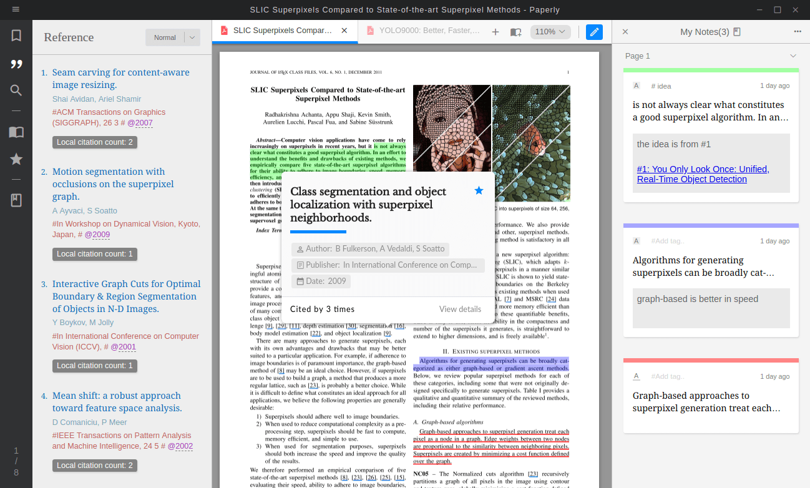

Jim Lau
致敬所有裝載智慧，卻又甘於平凡的人
我叫刘开展，2018届毕业于哈尔滨工业大学计算机专业。毕业后与伙伴@Ricky Wong一同研发了一款科研者专属的学术阅读器Paperly，也搭建了一个国内免费的论文下载平台喵咪论文，旨在为科研事业添砖添瓦，欢迎感兴趣的的朋友一起讨论交流(知乎、medium)
![]() 创新、专注的学术阅读器
创新、专注的学术阅读器
全球首款支持「引用浮现」，兼备「笔记回顾」、「学术灵感」的阅读器
同时支持 Windows、 Mac 与 Linux 系统

结合自身的科研经历与和多名教授学生的交流探讨，我与Ricky意识到了当前传统阅读工具因其部分功能的缺失正在潜移默化地降低科研者的效率，为此我们设计了Paperly。它主要提供了以下功能：
1. 引用浮现
鼠标移动到引用处，即可显示引用文献信息。相较去文末查找参考文献，没有打断阅读时宝贵的注意力。
2. 参考文献侧栏
参考文献显示在侧栏，且支持按本文引用次数排序。这样能快速发现论文的最重要的引用。
3. 可回顾的笔记系统
任何原文的笔记都可以方便的集中回顾，而不是仅保留在PDF中。
4. 知识图
读过的笔记，阅读过的论文，可以形成图形化的知识图谱，有助于激发高纬度灵感思考。
5. 跨平台
支持Windows，macOS, Linux系统，无论哪种工作环境都可以无缝迁移
还有很多细节创新：待读星标、doi信息、论文管理等，都是充分服务于学术的特性